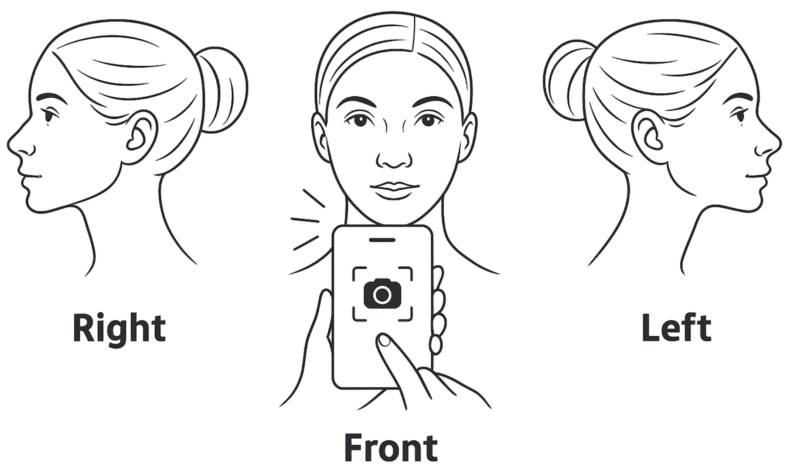
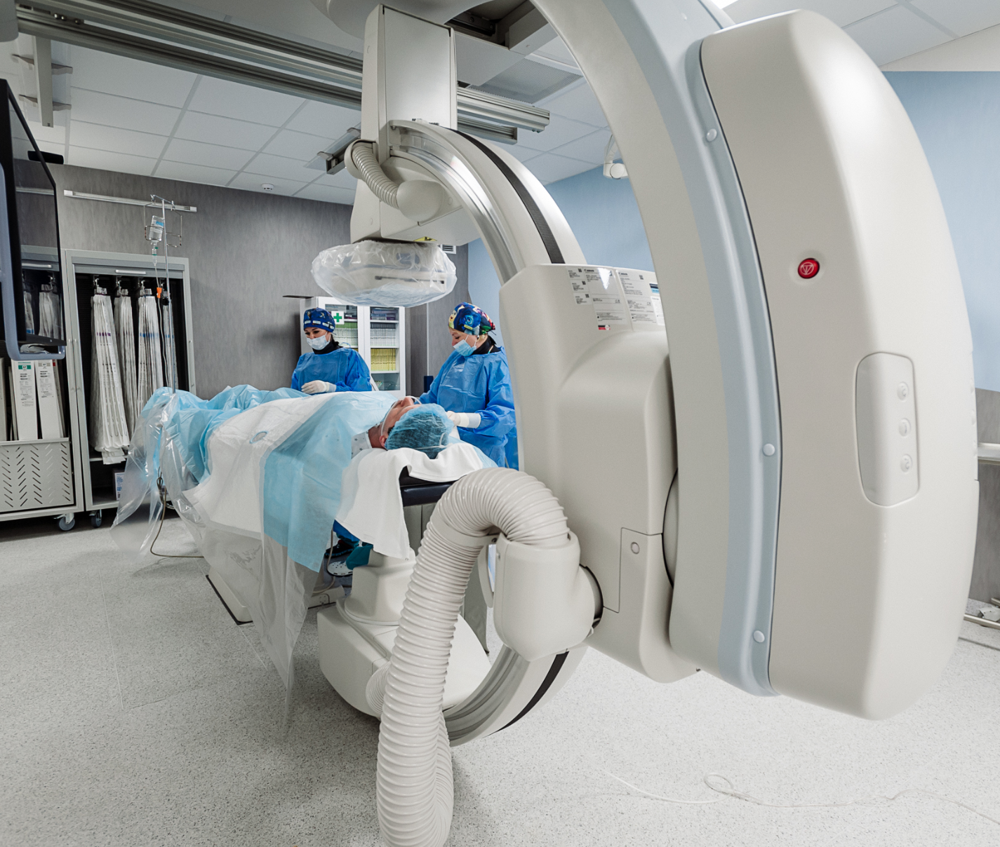

In the Careers section, we publish current openings in our research fields.
Our Projects

Coronary Artery Disease Detection by Facial Photo
In addition to widely used predictive models based on traditional clinical risk factors [1–2], some external facial features have also been linked to increased risk of CAD, opening up new opportunities for screening [3].
For example, features such as baldness, gray hair, facial wrinkles, earlobe crease, xanthelasma, and corneal arcus have been associated with higher risk of CAD and overall cardiovascular deterioration [4–6].
Several studies have also shown that such visual features may improve the accuracy of conventional risk models.
Recently, similar research has been conducted in China and has shown impressive results [7].
Our goal: Development of an algorithm for detecting coronary artery disease risk based on facial photo analysis.
Features: clinical testing, open publications, scalable architecture.
Our goal: Development of an algorithm for detecting coronary artery disease risk based on facial photo analysis.
Features: clinical testing, open publications, scalable architecture.
References:
- [1]. Peter WF, Ralph BD, Daniel L, Belanger AM, Silbershatz H, Kannel WB. Prediction of coronary heart disease using risk factor categories. Circulation, 1998.
- [2]. Almeida J, Fonseca P, Dias T, Ladeiras-Lopes R, Bettencourt N, Ribeiro J, Gama V. Comparison of coronary artery disease consortium 1 and 2 scores and Duke clinical score to predict obstructive coronary disease by invasive coronary angiography. Clin Cardiol, 2016.
- [3]. Christoffersen M, Tybjærg-Hansen A. Visible aging signs as risk markers for ischemic heart disease: epidemiology, pathogenesis and clinical implications. Ageing Res Rev, 2016.
- [4]. Christoffersen M, Frikke-Schmidt R, Schnohr P, Jensen GB, Nordestgaard BG, Tybjærg-Hansen A. Visible age-related signs and risk of ischemic heart disease in the general population a prospective cohort study. Circulation, 2014.
- [5]. Schnohr P, Lange P, Nyboe J, Appleyard M, Jensen G. Gray hair, baldness, and wrinkles in relation to myocardial infarction: the Copenhagen city heart study. Am Heart J, 1995.
- [6]. Ang M, Wong W, Park J, Wu R, Lavanya R, Zheng Y, Cajucom-Uy H, Tai ES, Wong TY. Corneal arcus is a sign of cardiovascular disease, even in low-risk persons. Am J Ophthalmol, 2011.
- [7]. Wang Y, Mao LH, Jia EZ, Li ZY, Ding XQ, Ge PC, Liu Z, Zhu TB, Wang LS, Li CJ, Ma WZ, Yang ZJ. Relationship between diagonal earlobe creases and coronary artery disease as determined via angiography. BMJ Open, 2016.

AI for Fundus Image Analysis
Retinal vessel assessment has long been used by clinicians to estimate cardiovascular disease (CVD) risk, as retinal vascular changes (e.g., arteriolar narrowing) reflect vascular pathology in other areas including brain and heart [1–2].
With the development of digital ophthalmology and automated image analysis, more accurate and objective vessel measurements have become possible, revealing close associations with CVD risk factors and enabling prediction of adverse events such as heart attack or stroke [1–2].
Deep learning for fundus image analysis has already proven effective for identifying various diseases [3][4]. This approach offers a fast, affordable, and reproducible screening method, making it highly promising for large-scale studies and clinical use.
With the development of digital ophthalmology and automated image analysis, more accurate and objective vessel measurements have become possible, revealing close associations with CVD risk factors and enabling prediction of adverse events such as heart attack or stroke [1–2].
Deep learning for fundus image analysis has already proven effective for identifying various diseases [3][4]. This approach offers a fast, affordable, and reproducible screening method, making it highly promising for large-scale studies and clinical use.
References:
- [1]. Wong, T. Y. et al. Retinal arteriolar narrowing and risk of coronary heart disease in men and women. The atherosclerosis risk in communities study. JAMA, 2002.
- [2]. Wang, S. B. et al. A spectrum of retinal vasculature measures and coronary artery disease. Atherosclerosis, 2018.
- [3]. Liew, G., Wang, J. J., Mitchell, P. & Wong, T. Y. Retinal vascular imaging: a new tool in microvascular disease research. Circ. Cardiovasc. Imaging, 2008.
- [4]. Cheung, C. Y., Ikram, M. K., Klein, R. & Wong, T. Y. The clinical implications of recent studies on the structure and function of the retinal microvasculature in diabetes. Diabetologia, 2015.

AI-based Digital Assistant for Doctors
Effective postoperative monitoring is a crucial stage in modern patient care.
Timely detection of complications or negative trends allows for rapid treatment adjustments, prevents severe consequences, and reduces rehospitalization risk.
However, traditional follow-up by phone is labor-intensive for medical staff, especially with large patient numbers.
Implementing an AI assistant capable of independently calling patients, collecting key health parameters, and promptly advising on seeking medical care when needed greatly reduces the physician's workload [1-2].
Such an AI assistant works strictly according to protocol, never forgets to ask critical questions, and can even detect hidden risks based on patient history.
This enables clinicians to focus on more complex cases, improve the quality and personalization of care, and save significant time, reducing the load on medical personnel [3].
References:
- [1]. Arun Babu & Sekhar Babu Boddu. "BERT-Based Medical Chatbot: Enhancing Healthcare Communication through Natural Language Understanding." Exploratory Research in Clinical and Social Pharmacy, 2024.
- [2]. Huang MY, Weng CS, Kuo HL, Su YC. Using a chatbot to reduce emergency department visits and unscheduled hospitalizations among patients with gynecologic malignancies during chemotherapy: A retrospective cohort study. Heliyon, 2023.
- [3]. Geoghegan L, Scarborough A, Wormald JCR, et al. Automated conversational agents for post-intervention follow-up: a systematic review. BJS Open, 2021.
Projects at Lambda HSE

Applied DL for Physics of Materials and Molecules
Studying the properties of matter and generating matter with given properties is the basis for many areas of industry. Neural networks have recently begun to be actively used in the field of materials science and this is one of the hottest scientific areas [1].
Large language models (LLMs) have shown impressive abilities in a variety of tasks, but there are still challenges in their use for natural sciences [2].
In our project, we aim to adapt and explore the behavior of LLMs for generating atom-level structures for solving physical and chemical problems.
A major challenge in generative modeling is the limited availability of (especially experimental) data [3]. In addition, the choice of data representation for materials is not obvious and depends on the approach used.
With some representations, a portion of the object's information is lost. We adapt and extend textual representation methods to low-dimensional crystal structures, and for molecular structures, we propose a multimodal representation to improve generation quality.
The ultimate goal is to develop algorithms for determining the composition and geometry of crystals and molecules, accounting for their physically important macroscopic properties.
Research is ongoing [4-6], and many generation methods have been proposed, but most have important limitations.
For crystals, particular attention should be paid to optical properties and low-dimensional (2D) materials, which are still understudied and whose number grows every year.
2D materials [7] are highly promising for applications due to their unique properties and size, and they are relatively easy to construct experimentally.
References:
- [1].Zhang, X., Wang, L., Helwig, J., Luo, Y., Fu, C., Xie, Y., Liu, M., Lin, Y., Xu, Z., Yan, K. and Adams, K., Artificial intelligence for science in quantum, atomistic, and continuum systems. arXiv, 2024.
- [2]. Antunes, L.M., Butler, K.T. and Grau-Crespo, R., Crystal structure generation with autoregressive large language modeling. Nature Communications, 2024.
- [3]. Al-Maeeni, A., Lazarev, M., Kazeev, N., Novoselov, K.S. and Ustyuzhanin, A., Review on automated 2D material design. 2D Materials, 2024.
- [4]. Luo, X., Wang, Z., Gao, P., Lv, J., Wang, Y., Chen, C. and Ma, Y., Deep learning generative model for crystal structure prediction. npj Computational Materials, 2024.
- [5]. Jablonka, K.M., Schwaller, P., Ortega-Guerrero, A. and Smit, B., Leveraging large language models for predictive chemistry. Nature Machine Intelligence, 2024.
- [6]. Merchant, A., Batzner, S., Schoenholz, S.S., Aykol, M., Cheon, G. and Cubuk, E.D., Scaling deep learning for materials discovery. Nature, 2023.
- [7]. Glavin, N.R., Rao, R., Varshney, V., Bianco, E., Apte, A., Roy, A., Ringe, E. and Ajayan, P.M., Emerging applications of elemental 2D materials. Advanced Materials, 2020.

Applied DL for medicine
Coronary artery disease (CAD) remains a leading cause of death and morbidity worldwide, including in Russia, where it accounts for over half of all cardiovascular diseases.
Despite progress in medicine, effective CAD diagnosis and treatment are still a top healthcare priority.
Modern imaging techniques such as coronary angiography provide a wealth of information, but the growing volume of data requires significant effort to process and interpret, and human factors can affect diagnostic accuracy and lead to extra risks and costs.
Developing automated tools to rapidly and accurately analyze coronary angiography results and calculate key blood flow parameters in real time can improve diagnostic quality and reduce strain on clinicians and healthcare systems.
This is now possible due to advances in machine learning and artificial intelligence, which have already demonstrated success in medical image analysis [1].
The project involves building a multi-stage platform for comprehensive coronary artery assessment, including artery segmentation [2], 3D modeling [3-5], hemodynamics modeling, and automated ischemic event risk assessment based on these data.
This comprehensive approach will not only increase CAD diagnostic accuracy, but also optimize treatment costs, making it highly relevant and practical for the medicine of the future.
References:
- [1]. Khelimskii, D., Badoyan, A., Krymcov, O., Baranov, A., Manukian, S. and Lazarev, M., AI in interventional cardiology: Innovations and challenges. Heliyon, 2024.
- [2]. Iyer, K., Najarian, C.P., Fattah, A.A., Arthurs, C.J., Soroushmehr, S.R., Subban, V., Sankardas, M.A., Nadakuditi, R.R., Nallamothu, B.K. and Figueroa, C.A., AngioNet: a convolutional neural network for vessel segmentation in X-ray angiography. Scientific Reports, 2021.
- [3]. Iyer, K., Nallamothu, B.K., Figueroa, C.A. and Nadakuditi, R.R., A multi-stage neural network approach for coronary 3D reconstruction from uncalibrated X-ray angiography images. Scientific Reports, 2023.
- [4]. Galassi, F., Alkhalil, M., Lee, R., Martindale, P., Kharbanda, R.K., Channon, K.M., Grau, V. and Choudhury, R.P., 3D reconstruction of coronary arteries from 2D angiographic projections using non-uniform rational basis splines (NURBS) for accurate modelling of coronary stenoses. PloS one, 2018.
- [5]. Maas, K.W., Ruijters, D., Vilanova, A. and Pezzotti, N., NeRF-CA: Dynamic Reconstruction of X-ray Coronary Angiography with Extremely Sparse-views. arXiv preprint arXiv:2408.16355. Heliyon, 2024.
Open Positions Available!